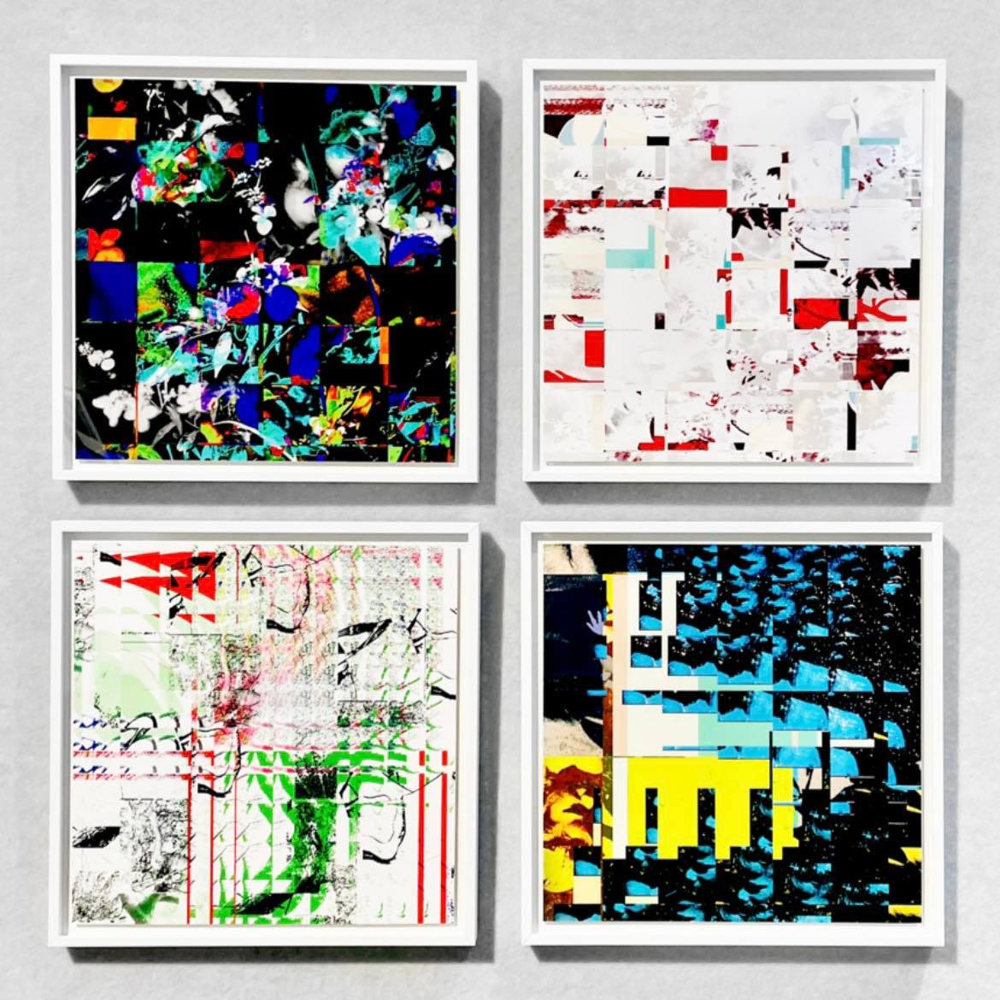

|  |  |
 |
 |
||
|
SAVE: 救亡圖存 (2021) 存檔 (save file as...) 為拯救 (save) 之舉？ |
當詩意普遍成了濫情 日光之下再也無鮮明的圖像 一切象徵性失效 世界的秘密語言 不再流通 海就是海 是毫無陳述的瞭然 花––為花 霧––為霧 縱然非花非霧 在那兒 一位取代我的女孩 她的表象 卻無法描繪我的整體 |
事物的形象逐漸凋零 輪廓亦變得隱晦 失去深度 人們得持續透過存檔 拯救當今所有過時的圖像 不過是疏忽了 數位檔案也將在一日腐朽 而意義 在圖像的氾濫之中 正以前所未有的規模 瀕臨危亡 |
上個月，電腦上的Photoshop出現異狀，存取檔案時圖檔不曉得為什麼會遭到重組、像素化與極端色彩變化等酷刑摧殘。最終被存取的檔案宛如原始圖像的一具殘屍，早已面目全非，慘狀駭人，不禁引發我對數位化腐朽 (digital decay) 的概念進行反思，也意外地讓我獲得一系列素材進行本次創作。 |
在"SAVE: 救亡圖存”當中，我選用了兩張出現異狀的檔案與其原始圖檔疊合在一起，再透過一些影像處理與調色的技術，呈現出大家所看到的成品。 |